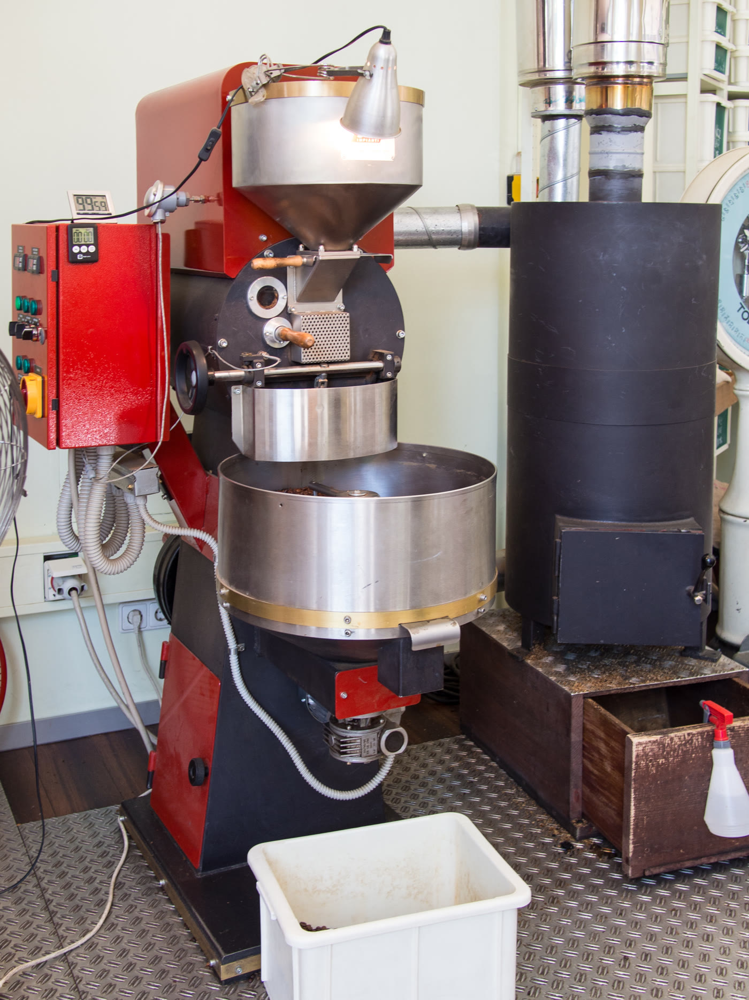
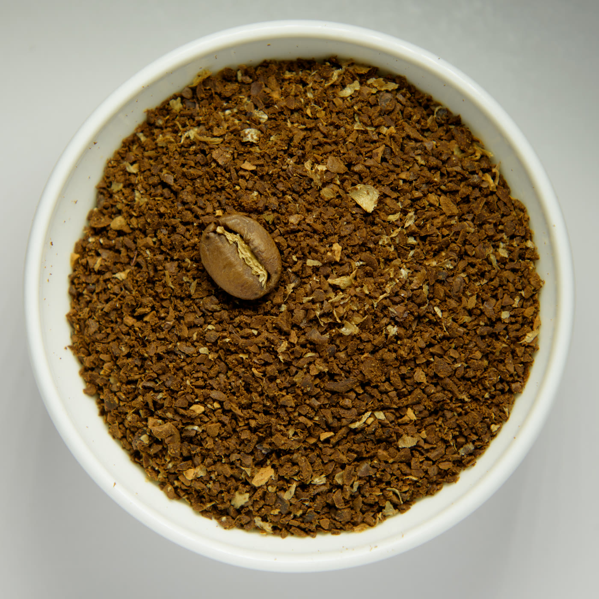

KAALO roasts one small batch every Thursday and prints the date on every bag. No warehouse stock, no “fresh” claims without a date — the log is the whole story, published before we sell a single bag.
Next roast: Thu 29 Oct · This week's batch: roasted Thu 22 Oct — resting

The latest two entries. The full log — every batch we have ever roasted, sold out or not — lives on its own page.
Coffee needs rest, then it has a peak. Our rule, printed on every bag: rest 7 days, brew by day 21. The checker runs on its own page — bring the date stamped on your bag.

Two of the four lines — the rest, the grind options and how ordering works are on the prices page.